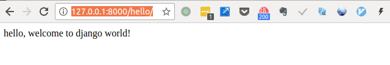

第一个Django项目-mysite
Table of Contents
1 目标
创建一个返回欢迎信息的网页。
2 创建项目
django-admin startproject mysite
会在当前目录下创建一个 mysite 目录，目录结构：
mysite/
├── manage.py
└── mysite
├── __init__.py
├── settings.py
├── urls.py
└── wsgi.py
3 启动项目
python3 manage.py runserver

Figure 1: 第一次runserver日志
现在，服务器正在运行，浏览器访问 https://127.0.0.1:8000/。 你将会看到一个 “祝贺” 页面，随着一只火箭发射，服务器已经运行了。

Figure 2: 第一次runserve浏览器
3.1 更换端口
默认情况下，runserver 命令会将服务器设置为监听本机内部 IP 的 8000 端口。
如果你想更换服务器的监听端口，请使用命令行参数。举个例子，下面的命令会使服务器监听 8080 端口：
python3 manage.py runserver 8080
如果你想要修改服务器监听的 IP，在端口之前输入新的。比如，为了监听所有服务器的公开 IP（这你运行 Vagrant 或想要向网络上的其它电脑展示你的成果时很有用），使用：
python3 manage.py runserver 0:8000
3.2 重新加载
用于开发的服务器在需要的情况下会对每一次的访问请求重新载入一遍 Python 代码。所以你不需要为了让修改的代码生效而频繁的重新启动服务器。然而，一些动作，比如添加新文件，将不会触发自动重新加载，这时你得自己手动重启服务器。
4 添加应用
python3 manage.py startapp hello
新的目录结构：
mysite/
├── db.sqlite3
├── hello
│ ├── admin.py
│ ├── apps.py
│ ├── __init__.py
│ ├── migrations
│ │ └── __init__.py
│ ├── models.py
│ ├── tests.py
│ └── views.py
├── manage.py
└── mysite
├── __init__.py
├── settings.py
├── urls.py
└── wsgi.py
设置返回内容。 hello/views.py
<script src="https://gist.github.com/phenix3443/658960c558fe379bafc6a35a09afe833.js"></script>
需要url指向该视图。hello/urls.py
<script src="https://gist.github.com/phenix3443/c220106689e7fff52f0cfb9e3d6627d9.js"></script>
hello目录结构：
hello ├── admin.py ├── apps.py ├── __init__.py ├── migrations │ └── __init__.py ├── models.py ├── tests.py ├── urls.py ├── views.py
在项目的根URLconf文件中导入创建的hello.urls模块。mysite/mysite/urls.py
<script src="https://gist.github.com/phenix3443/1fa08b91baeb170988459e1143bfb989.js"></script>
函数 include() 允许引用其它 URLconfs。每当 Django 遇到 :func：~django.urls.include 时，它会截断与此项匹配的 URL 的部分，并将剩余的字符串发送到 URLconf 以供进一步处理。
5 启动
python3 manage.py runserver

Figure 3: 访问hello页面后台日志
用浏览器访问 http://localhost:8000/hello ，看到浏览器返回index函数中内容。

Figure 4: 返回hello信息